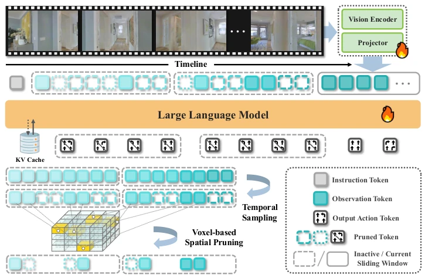
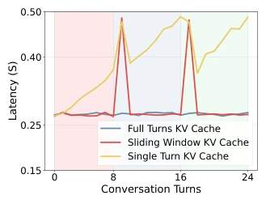

This paper adds a "dual-speed engine" to streaming navigation. The Fast stream handles real-time dialogue, while the Slow stream compresses historical memory, attempting to strike a balance between long-range reasoning and real-time performance. The SOTA results are indeed impressive, with an SPL of 51.9% on R2R that is competitive. However, can the "slow update" relying on voxel pruning truly withstand real-world occlusions and viewpoint changes? The authors themselves acknowledge this point. Additionally, forcibly framing navigation as multi-turn dialogue, while logically coherent, downplays the synchronization cost of asynchronous inference. Overall, the engineering implementation is quite solid, theoretical innovation is somewhat conservative, typical of "patching existing Video-LLMs", but patched quite effectively. Especially the real robot deployment proves the value of low latency, however robustness for complex occlusion scenarios still needs observation.
Real-world VLN needs to handle continuous video streams, requiring fine-grained visual understanding, long-range context, and low latency. After existing Video-LLM methods [1, 2] are extended to VLA models [3, 4, 5], they face the problem of linear growth of visual tokens. Some methods fix sampled frames [5, 6], losing temporal resolution; some use pooling compression [3, 4], sacrificing details. More troublesome is that they typically refresh the LLM context every step, leading to training and inference redundancy. StreamVLN aims to solve this contradiction, enabling the model to maintain low latency and coherent reasoning in long video streams, avoiding redundant calculations.
方法Method
整体基于 LLaVA-Video [2] 构建，将导航视为多轮对话。核心是混合上下文建模：1) Fast 流对话上下文：使用滑动窗口 KV 缓存保留最近 N 轮对话，窗口满后卸载旧状态，确保低延迟解码。2) Slow 更新记忆上下文：对历史窗口进行 3D 感知 token 剪枝。利用深度信息将 2D patch 反投影到 3D 体素空间，同一体素内只保留最新 token，减少时空冗余。3) 数据：混合训练 VLN 轨迹、DAgger 纠错数据及通用 VL 数据（VideoQA, MMC4）。这种设计让模型能用短 clip 训练适应长视频，且推理成本可控，支持长视频流下的稳定解码速度。
Overall built based on LLaVA-Video [2], treating navigation as multi-turn dialogue. The core is hybrid context modeling: 1) Fast stream dialogue context: Uses sliding window KV cache to retain the last N rounds of dialogue, unloading old states after the window is full to ensure low-latency decoding. 2) Slow update memory context: Performs 3D-aware token pruning on the history window. Utilizing depth information to back-project 2D patches into 3D voxel space, retaining only the latest token within the same voxel to reduce spatio-temporal redundancy. 3) Data: Mixed training of VLN trajectories, DAgger correction data, and general VL data (VideoQA, MMC4). This design allows the model to adapt to long videos using short clips for training, with controllable inference costs, supporting stable decoding speeds under long video streams.

Figure 1: Framework of StreamVLN. The input consists of a language instruction and a stream of RGB images. Each navigation episode is framed as a multi-turn dialogue, where the agent continually queries for the next actions. To support long-horizon reasoning while maintaining a manageable context size and low latency, we adopt a fixed-size sliding window to retain recent dialogue history. The context in inactive windows is updated by token pruning to to reduce memory overhead.
In the VLN-CE benchmark, StreamVLN achieves SOTA on R2R and RxR Val-Unseen, with SR reaching 56.9% and 52.9%. Real-world deployment on Unitree Go2, inference latency 0.27s/4 actions. Ablation shows that mixed data (VideoQA+MMC4) and DAgger data significantly improve performance. Sliding window size set to 8 rounds is best, voxel pruning reduces 20% tokens but improves accuracy. Compared to NaVILA [5] etc., StreamVLN has stronger generalization while maintaining low latency, proving the effectiveness of the SlowFast strategy, and requiring no extra panoramic supervision.
Figure 4: Qualitative results of StreamVLN in several representative real-world environments. From top to bottom are Home, Workspace, Mall and Outdoor. StreamVLN achieves robust performance across diverse VLN scenarios, capable of accurately following complex instructions with various landmarks (marked as red) and handling real-world disturbances.

Figure 5: Impact of KV cache reuse in multiple turns. Sliding window size:8.